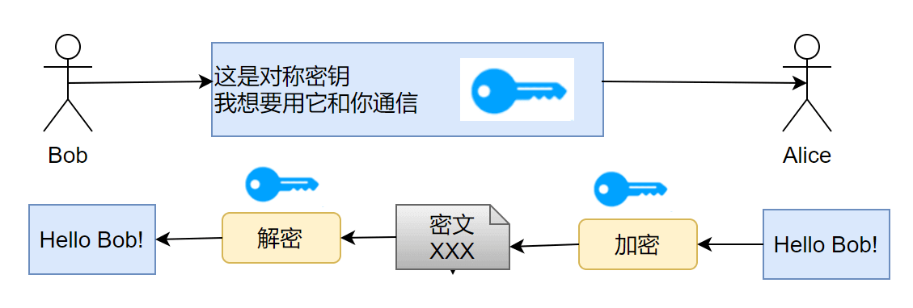
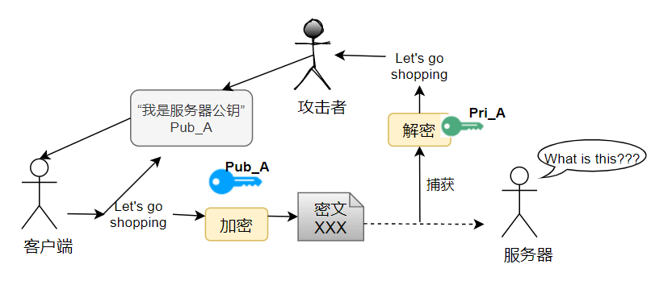

第一章 计算机常用知识
第一章 计算机常用知识
1.1 操作系统
操作系统（Operating System, OS）就是一台电脑或手机的大管家 + 指挥中心。它不创造内容，但它安排一切、管理一切、协调一切。没有它，电脑和手机就是一堆金属和电路板，啥也干不了。
1.1.1 操作系统的 4 个核心作用（类比说明）
| 功能 | 类比 | 简单解释 |
|---|---|---|
| 1️⃣ 管理硬件 | 操场管理者 | 负责谁什么时候使用 CPU（大脑）、内存（白板）、硬盘（资料室） |
| 2️⃣ 运行程序 | 课堂安排表 | 安排你打开的各种程序（微信、Word、浏览器），让它们互不打架 |
| 3️⃣ 文件系统 | 图书管理员 | 把杂乱的硬盘数据整理成文件夹、文件，便于保存和查找 |
| 4️⃣ 用户交互 | 服务员 | 你点鼠标、敲键盘、触屏，操作系统把这些变成电脑能理解的动作 |
1.1.2 32位系统与64位系统
32位系统与64位系统的主要区别体现在处理器的架构能力、内存寻址范围、以及软件支持等方面。首先我们要知道32位和64位指的是什么。其实这是根据CPU内的寄存器字长来确定的，计算机内部数据都是二进制来呈现的，32位的计算机CPU一次最多能处理32位的二进制数据，而64位的计算机CPU一次最多能处理64位的二进制数据，就像一扇大门有32个人并排站的宽度，所以它一次性最多允许32个人并排通过。有时也会用x86和x64来区分，其实x86就是32位的，其处理器内核就是x86。目前我们使用的系统和应用软件大部分默认都是64位的操作系统，有的时候会显示x64或者amd64。
- 区别一：支持的内存大小不同
32位的系统最多支持4G的内存，而64位理论上可以支持18EB（$2^{64}$），常用范围为几十GB~TB的内存。所以能安装64位的系统尽量安装64位； - 区别二：数据处理能力不同
32位的计算机CPU一次能处理最多32位的二进制数据，而64位的计算机CPU一次能处理最多64位的二进制数据； - 区别三：对配置要求不同
64位的系统只能安装在64位电脑上（CPU必须是64位的），同时需要安装64位常用软件以发挥最佳性能。32位的系统则可以安装在32位（32位CPU）或64位（64位CPU）的电脑上； - 区别四：架构不同
在32位到64位的发展中，架构的改变是一个根本的改变，因此大多数操作系统必须进行全面性修改，以取得新架构的优点；
1 | # Windows下查看系统的架构 |
1.2 常见操作系统
1.2.1 Windows 操作系统
Microsoft Windows 是由微软公司开发的一款基于图形用户界面的操作系统，主要运用于计算机、智能手机等设备。共有普通版本、服务器版本（Windows Server）、手机版本（Windows Phone等）、嵌入式版本（Windows CE等）等子系列，是全球应用最广泛的操作系统之一。
Windows的研发始于1983年，最初目标是在MS-DOS的基础上提供一个多任务的图形用户界面。随着版本的不断更新，Windows逐渐发展为专为个人电脑和服务器用户设计的成熟操作系统，并最终在全球个人电脑操作系统市场占据主导地位。Windows 1.0 于1985年11月20日推出，Windows 3.0发布后开始取得商业地位，1993年8月推出 Windows NT 系列，1996年推出Windows Server系列，2000年推出 Windows Mobile 系列（后被 Windows Phone 取代）。Microsoft 早期为 PC 提供了 MS-DOS 命令行环境，后采用图形用户界面（GUI），推出了 Windows 系统。在早期系统需要安装在 MS-DOS 之上，为 MS-DOS 提供了图形化的操作界面。其操作界面先后在1995年（Windows95）、2001年（Windows XP）、2006年(Windows Vista)、2012年（Windows8）进行大幅整改。截至2025年，Windows已发布三十余个版本，普通版本已更新至Windows 11；服务器版本已更新至Windows Server 2025；手机版本已终止研发，最后版本为Windows 10 Mobile ；嵌入式版本为Windows CE（后被Windows for IoT取代）。
1.2.2 MacOS 操作系统
macOS（2011年及之前称 Mac OS X，2012年至2015年称 OS X）是苹果公司推出的基于图形用户界面操作系统，为麦金塔（Macintosh，简称 Mac）系列电脑的主操作系统。macOS 是 1999 年发行的 Classic Mac OS 最终版本 Mac OS 9 的后继者。1999 年发布 macOS Server 的首个版本 Mac OS X Server 1.0，桌面版 Mac OS X 10.0“Cheetah”于 2001 年 3 月 24 日发布。2012 年苹果将 Mac OS X 更名为 OS X，第一个使用此命名的系统为“OS X Mountain Lion”。以前版本的 macOS 以大型猫科动物命名，例如 Mac OS X v10.8 被称为“Mountain Lion”，但随着 2013 年 6 月 OS X Mavericks 的公布，命名开始采用加州地标。2016 年 6 月，苹果公司宣布 OS X 更名为macOS，以便与苹果其他操作系统 iOS, watchOS 和 tvOS 保持统一的命名风格。 在 Apple 宣布启动 Mac 从 Intel 迁移至AppleSilicon 后，首个支持 Apple Silicon 的 macOS Big Sur 于2020 年 6 月 23 日发布，目前最新的版本为 macOS Sequoia，于2024年6月10日在 WWDC 2024 上公布。
由于 Apple 的产品线包括电脑、手机、平板、手表、眼镜、Apple TV 等多种硬件产品，这些硬件的操作系统都建立在一个名为 Darwin 的共同的开源 Unix-like 内核和核心组件之上。在这个共同核心之上，Apple 构建了不同的上层系统库、框架和用户界面，以适应各自设备的硬件特性和使用场景。MacOS 操作系统最大的特点是跨设备尽可能的共享资源，特别是网络服务资源。比如 Apple 的手机、电脑和平板实现了文件共享，Apple 的电脑现在甚至可以实现在电脑上操作手机的功能。
1.3 文件系统概述
文件子系统是操作系统中组织和管理数据存储的一套机制，它负责管理计算机的存储设备，并为用户和应用程序提供一种方便、抽象的方式来组织、访问和管理数据。简单来说，文件子系统就是操作系统用来管理文件和目录的机制。
1.3.1 文件子系统的功能
文件子系统提供了丰富的功能，使得用户和程序能够有效地与存储设备交互。其主要功能包括：
- 文件管理：
- 创建和删除文件： 提供创建新文件和移除不再需要文件的能力。
- 打开和关闭文件： 在访问文件之前需要打开文件，完成操作后需要关闭文件，这涉及到底层资源的分配和释放。
- 读写文件： 提供按字节、按块或按记录读取和写入文件内容的功能。
- 定位文件： 允许在文件中任意位置进行读写操作（seek）。
- 获取和设置文件属性： 管理文件的元数据，如文件大小、创建时间、修改时间、所有者、权限等。
- 文件共享与锁定： 控制多个进程对同一文件的并发访问，防止数据不一致。
- 目录管理：
- 创建和删除目录： 组织文件层次结构。
- 查找文件： 根据文件名在目录中查找对应的文件。
- 列出目录内容： 显示一个目录下包含的文件和子目录。
- 改变当前目录： 允许用户和程序在文件系统中导航。
- 文件路径解析： 将用户提供的文件路径（如
c:\Users\jamesl\document.txt）解析成文件系统内部可以识别的存储位置。
- 存储空间管理：
- 分配存储空间： 当创建文件时，文件系统需要为文件分配磁盘上的存储块。
- 回收存储空间： 当删除文件时，文件系统需要回收被占用的存储块，以便重新利用。
- 管理空闲空间： 跟踪磁盘上哪些存储块是可用的。
- 磁盘配额管理： 限制用户或组可以使用的存储空间大小。
- 数据完整性和可靠性：
- 错误检测和恢复： 检测磁盘上的错误，并在可能的情况下进行恢复。
- 数据备份和恢复： 支持文件系统的备份和恢复操作。
- 文件系统检查和修复： 在系统崩溃或不正常关机后，检查文件系统的一致性并尝试修复错误。
- 访问控制和安全性：
- 用户身份验证和授权： 验证用户身份，并根据用户的权限控制其对文件和目录的访问（读、写、执行等）。
- 访问控制列表 (ACL)： 提供更细粒度的权限控制。
1.3.2 文件子系统的组织方式
文件子系统的组织方式可以从逻辑和物理两个层面来理解，并且通常采用分层架构来实现。
1. 逻辑组织：
- 文件： 文件是文件系统中数据的基本单位，它是一组相关信息的集合，通常以名称标识。从用户的角度看，文件是一个线性的字节序列。
- 目录（文件夹）： 目录用于组织和分组文件。目录本身也是一种特殊类型的文件，它包含其他文件和子目录的信息。这种层次结构的组织方式使得用户能够方便地管理大量文件。
- 文件路径： 文件路径用于唯一地标识文件或目录在文件系统层次结构中的位置。可以是绝对路径（从根目录开始）或相对路径（相对于当前目录）。
- 文件系统树： 整个文件系统通常被组织成一个树状结构，根目录是树的顶部，所有其他目录和文件都是其分支。
2. 物理组织：
文件子系统需要将逻辑上的文件和目录映射到物理存储设备（如硬盘、固态硬盘）上的具体位置。
- 块/簇 (Blocks/Clusters)： 存储设备被划分为固定大小的存储单元，称为块或簇。文件系统以块为单位进行空间的分配和管理。块的大小是文件系统格式化时确定的。
- 文件分配： 当文件被创建时，文件系统需要为其分配一系列的块来存储数据。常见的块分配方式包括：
- 连续分配： 为文件分配一组连续的块。简单但容易产生外部碎片；
- 链式分配： 文件的每个块包含指向下一个块的指针。解决了外部碎片问题，但随机访问效率低；
- 索引分配： 为每个文件创建一个索引块，索引块中包含文件所有数据块的地址。支持高效的随机访问，但需要额外的索引块开销；
- 元数据 (Metadata)： 文件系统需要存储关于文件和目录的附加信息，这些信息被称为元数据。例如，文件名、大小、权限、创建/修改时间、数据块地址等。这些元数据通常存储在专门的数据结构中，如 Unix/Linux 系统中的 i-node；
- 空闲空间管理： 文件系统需要维护关于哪些块是空闲的信息，以便为新文件分配空间。常用的空闲空间管理方法有位图法和空闲链表法；
- 目录项： 目录中存储着其包含的文件和子目录的信息，每个文件或子目录对应一个目录项，其中包含名称以及指向其元数据（如 i-node）的指针；
3. 分层架构：
为了更好地组织和实现文件系统的复杂功能，现代操作系统通常采用分层架构来设计文件子系统。典型的分层可能包括：
- 用户接口层： 提供用户和应用程序与文件系统交互的接口，例如命令行工具（ls, cd, cp, mv, rm）和图形用户界面；
- 文件组织层/逻辑文件系统： 负责处理文件的逻辑结构，如文件名的解析、目录的管理、文件路径的查找等。它将用户操作转换为对文件内部逻辑块的操作；
- 基本文件系统： 负责管理文件的物理存储，包括块的分配和回收、空闲空间的管理以及文件元数据的管理（如 i-node 的管理）。它处理逻辑块地址到物理块地址的映射；
- I/O 控制层： 负责与具体的存储设备进行交互，包括设备驱动程序，处理设备相关的细节，如扇区读写、错误处理等。它将物理块地址转换为设备可以理解的低级命令；
1.3.3 Windows 文件系统
Windows 文件系统的组织方式是基于层级式树状结构（hierarchical tree structure），以 驱动器（如 C:\）为根，逐级展开目录与文件，类似一棵倒挂的树。它遵循 [卷（volume）] → [目录（folder）] → [子目录 / 文件] 的组织原则。
Windows 文件系统的逻辑组织
从用户的角度来看，Windows 文件系统的逻辑组织主要体现在以下几个方面：
- 驱动器盘符 (Drive Letters)： Windows 将每个可访问的存储卷（如硬盘分区、光驱、U盘）分配一个唯一的字母，后跟一个冒号，例如
C:,D:,E:等。C:通常是安装操作系统的系统盘。这是文件系统的最高层级划分； - 分层目录结构 (Hierarchical Directory Structure)： 在每个驱动器盘符下，文件和文件夹（在 Windows 中通常称为文件夹，在其他系统中常称为目录）被组织成一个树状的层次结构。每个驱动器都有一个根目录，用
\表示（例如C:\）。所有其他文件夹和文件都位于根目录下或其子文件夹中； - 文件夹 (Folders)： 文件夹用于容纳和组织文件及其他子文件夹，提供了一种对文件进行分类和分组的方式；
- 文件 (Files)： 文件是存储数据的基本单元。每个文件都有一个唯一的名称，通常包含一个主文件名和一个扩展名（用
.分隔），扩展名通常指示文件的类型（例如.txt表示文本文件，.docx表示 Word 文档，.exe表示可执行文件）； - 文件路径 (File Paths)： 文件路径指定了文件或文件夹在文件系统树中的位置。路径由驱动器盘符、各级文件夹名称以及最终的文件或文件夹名称组成，各级之间用
\分隔，例如C:\Users\YourUsername\Documents\MyFile.txt；
这种逻辑组织方式使得用户可以方便地定位、访问和管理存储在不同设备上的大量文件。
Windows 文件系统的重点目录树 (以系统盘 C: 为例)
虽然用户可以在系统盘 (C:\) 的根目录下创建文件和文件夹，但为了系统的稳定性和文件管理的规范性，Windows 操作系统在安装时会创建一系列重要的系统文件夹，用于存放不同类型的文件。了解这些重点目录对于理解 Windows 的运作和进行系统维护非常有帮助。
1 | C:\ |
以下是 C:\ 根目录下一些最重要和常见的系统文件夹及其作用：
C:\Windows- 这是 Windows 操作系统的核心目录。
- 包含操作系统的大部分文件、系统程序、设备驱动程序、配置信息等。
- 用户和一般应用程序通常不应该直接修改或删除此目录下的文件，这可能导致系统不稳定甚至无法启动。
- 其中一些重要的子目录包括：
System32: 存放大多数 32 位系统 DLL 文件和重要的系统程序。在 64 位系统上，它也包含 64 位文件。SysWOW64: 在 64 位系统上，存放 32 位应用程序所需的系统文件。Fonts: 存放系统字体文件。sürücüler (Drivers): 存放设备驱动程序文件。Temp: 系统和应用程序可能在此存放临时文件。
C:\Program Files- 这是安装 64 位应用程序的默认位置（在 64 位 Windows 上）。
- 应用程序通常会在此目录下创建以其名称命名的子文件夹，并将程序的可执行文件、库文件、资源文件等存放在其中。
C:\Program Files (x86)- 在 64 位 Windows 上存在此目录。
- 这是安装 32 位应用程序的默认位置。这是为了兼容性而设计的，将 32 位程序与 64 位程序分开存放。
C:\Users- 这是一个非常重要的目录，用于存放所有用户的数据和配置信息。
- 每个用户登录系统后，系统都会在此目录下为其创建一个用户文件夹，文件夹名称通常是用户的登录名（例如
C:\Users\YourUsername）。 - 用户应该将自己的文档、图片、视频、下载文件等存放在自己用户文件夹下的相应子文件夹中。
- 用户文件夹下常见的重点子目录包括：
Desktop(桌面): 存放用户桌面上的文件和快捷方式。Documents(文档): 存放用户的文档文件。Downloads(下载): 存放用户从互联网下载的文件。Pictures(图片): 存放用户的图片文件。Videos(视频): 存放用户的视频文件。Music(音乐): 存放用户的音乐文件。AppData: 这是一个隐藏目录，存放应用程序的用户配置数据、缓存文件等。它通常又包含Local,Roaming,LocalLow等子目录，用于区分不同类型的应用数据。用户通常不需要直接访问此目录。
C:\ProgramData- 这是一个隐藏目录。
- 用于存放应用程序共享的数据，这些数据不特定于某个用户，可以被所有用户或系统服务访问。例如，某些应用程序的许可证文件、配置模板等。它类似于旧 Windows 版本中的
All Users配置文件中的 Application Data 部分。
C:\System Volume Information- 这是一个隐藏且受保护的系统目录。
- 存放系统还原点信息、卷影复制服务数据和索引服务数据库等。用户通常没有权限访问此目录。
C:\Recovery- 通常是一个隐藏目录。
- 存放 Windows 恢复环境所需的文件。
此外，在 C:\ 根目录下还可能看到一些隐藏的系统文件，例如：
pagefile.sys: 系统的页面文件，用于虚拟内存。hiberfil.sys: 如果启用了休眠功能，会生成此文件，用于存储休眠时的内存状态。
了解这些重点目录的作用，有助于用户更好地管理文件、安装软件、进行系统维护和故障排除。例如，当需要备份个人文件时，主要关注 C:\Users\YourUsername 目录即可；当需要查找安装的程序时，会去 C:\Program Files 或 C:\Program Files (x86) 中寻找。
1.3.4 macOS 文件系统
macOS 的文件系统基于 Unix，与 Windows 有显著的区别，其中最核心的一点是它采用单一的根目录 (Single Root) 结构，而不是像 Windows 那样为每个驱动器分配一个盘符。
macOS 文件系统的逻辑组织
- 单一根目录 (
/)： 整个文件系统的起点是一个唯一的根目录，用/表示。所有的文件和文件夹都位于这个根目录之下，形成一个倒置的树状结构； - 卷/宗卷 (Volumes) 和挂载 (Mounting)： 无论是启动盘的系统分区、用户数据分区、外接硬盘、U盘，还是网络共享，它们都不是独立的根目录。它们被系统“挂载”到根目录
/下的特定位置，使其成为文件系统树的一部分。通常，除了系统自身的卷外，其他卷会挂载到/Volumes目录下； - 文件夹 (Folders) / 目录 (Directories)： 用于组织和存放文件及其他目录，形成层次结构。在 macOS 中，用户界面上多称其为“文件夹”，底层沿用 Unix 的“目录”概念；
- 文件 (Files)： 存储数据的基本单元，具有名称。macOS 在文件命名上比 Windows 更加灵活，但内部仍有文件类型和创建者/类型代码等元数据（虽然用户不常直接看到）。文件扩展名（如
.txt,.app）依然常用，但系统不完全依赖它来确定文件类型； - 文件路径 (File Paths)： 用于指定文件或目录在文件系统树中的位置。路径使用
/作为分隔符，例如/Users/yourusername/Documents/MyFile.txt。路径可以是绝对路径（从/开始）或相对路径（相对于当前目录）；
这种单一根目录的组织方式，使得整个文件系统看起来像一个统一的整体，无论数据实际存储在哪个物理设备上，都可以通过 / 开始的路径来访问。
macOS 文件系统的重点目录树 (从根目录 / 开始)
1 | / |
说明重点：
| 路径 | 作用简介 |
|---|---|
/Applications |
全系统共享的 App |
/System |
操作系统核心，不可更改（SIP保护） |
/Users/yourname |
你的主目录，类似 Windows 下的 C:\Users\ |
/Library |
系统级支持文件(库) - 存放系统范围内的应用程序支持文件、偏好设置、屏幕保护、启动项等，供所有用户共享。 |
/usr/local |
本地工具（如 Homebrew）默认安装路径 |
/Volumes |
插入的U盘、移动硬盘都会出现在这里。例如：插入一个名为 MyUSB 的 U盘，它可能被挂载到 /Volumes/MyUSB。 |
1.3.5 Linux 文件系统（未完成）
1.4 网络安全基础
1.4.1 非对称加密
非对称加密采用两个密钥——一个公钥，一个私钥。在通信时，私钥仅由解密者保存，公钥由任何一个想与解密者通信的发送者（加密者）所知。可以设想一个场景：
- 在某个自助邮局，每个通信信道都是一个邮箱，每一个邮箱的所有者都在旁边立了一个牌子，上面挂着一把钥匙：这是我的公钥，发送者请将信件放入我的邮箱，并用公钥锁好；
- 但是公钥只能加锁，并不能解锁。解锁只能由邮箱的所有者——因为只有他保存着私钥。这样，通信信息就不会被其他人截获了，这依赖于私钥的保密性；

1.4.2 对称加密
对称加密：通信双方共享唯一密钥 k，加解密算法已知，加密方利用密钥 k 加密，解密方利用密钥 k 解密，保密性依赖于密钥 k 的保密性。

1.4.3 公钥传输的安全性
需要记住的是，在 Internet 的环境中，所有的通信都是不可靠的。这意味着：
- 数据包在传输过程中可能遭遇丢失、延迟、乱序甚至损坏，导致信息无法完整或及时送达；
- 数据可能在传输过程中被恶意监听、篡改，甚至通信会话可能遭到劫持。无论是网络拥塞、设备故障等物理或技术层面问题，还是来自恶意方的网络攻击行为（如中间人攻击、DDoS），都可能导致这些不可预测的通信异常或安全威胁；
设想下面一个场景：
- 客户端 C 和服务器 S 想要使用非对称加密通信，由上述非对称加密通信原理，C 需要先知道 S 的公钥，而 S 公钥的唯一获取途径，就是把 S 公钥在网络信道中传输；
- 假设 S 公钥不做加密，在信道中传输，那么很有可能存在一个攻击者 A，发送给 C 一个诈包，假装是 S 公钥，其实是诱饵服务器 AS 的公钥。当 C 收获了 AS 的公钥（却以为是 S 的公钥），C 后续就会使用 AS 公钥对数据进行加密，并在公开信道传输，那么 A 将捕获这些加密包，用 AS 的私钥解密，就截获了 C 本要给 S 发送的内容，而 C 和 S 二人全然不知；
